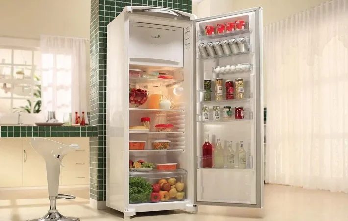
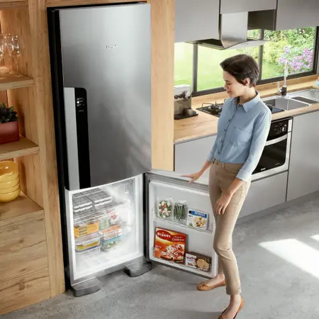
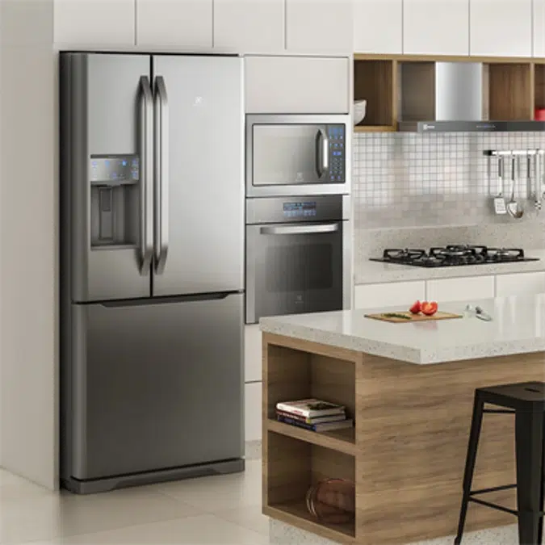
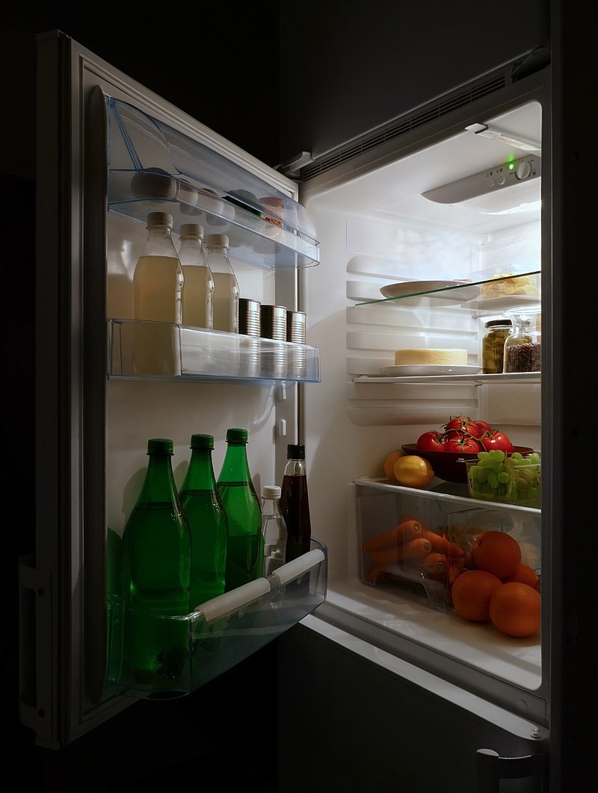
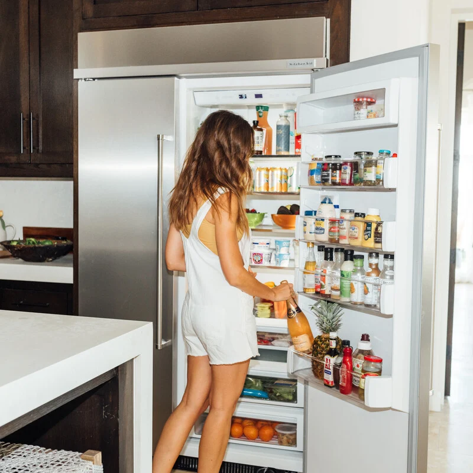

Se você gosta de manter seus alimentos frescos por mais tempo ou quer garantir que as bebidas
estejam sempre na temperatura ideal, então uma geladeira será um aparelho indispensável para
a sua cozinha.
Adoramos este eletrodoméstico por sua eficiência, versatilidade e design moderno. Além
disso, ela faz muito mais do que apenas conservar os alimentos; com opções avançadas como
prateleiras ajustáveis e compartimentos específicos, você pode organizar e armazenar tudo
de forma prática e elegante.
Sob esse pensamento, você, consumidor mediano, deve estar se questionando "qual seria a melhor geladeira para a minha casa?".
E é por dúvidas como essas que eu, Giovane Henrique Sotratto Silva lhe trago um top 10 com as melhores geladeiras no mercado
moderno, visando características como potência, preço e custo-benefício.

Dito isso, vamos ao top 10!!
Tipos de Geladeira

Geladeira com Freezer
Estas geladeiras estão equipadas com alguns complementos e
acessórios extras. Você também pode usá-las para congelar
carnes, vegetais e outros alimentos que precisam ser mantidos
a baixas temperaturas.
Geladeira de Convecção
Estas são as melhores do mercado e vêm com um sistema de
refrigeração avançado que distribui o ar frio de forma
uniforme. Você pode usar essas geladeiras para conservar
alimentos por mais tempo e manter a frescura de frutas e
legumes.
Geladeira Side by Side

Essas geladeiras possuem portas lado a lado, com o freezer
de um lado e o refrigerador do outro. Elas são ideais para
quem precisa de bastante espaço para armazenar uma variedade
de alimentos e bebidas, permitindo fácil acesso tanto aos
itens refrigerados quanto aos congelados.
Geladeira French Door
Este tipo de geladeira tem um design de porta dupla na parte
superior e um compartimento de freezer na parte inferior. As
geladeiras French Door combinam amplo espaço de armazenamento
com um layout moderno, sendo perfeitas para famílias que
precisam de bastante capacidade e organização.
Geladeira Inverter
Essas geladeiras usam tecnologia de inversor para ajustar a
velocidade do compressor conforme necessário. São conhecidas
por sua eficiência energética, mantendo os alimentos frescos
por mais tempo e ajudando a economizar na conta de luz.
Tecnologia de Geladeiras e Recursos de Segurança
Geladeiras utilizam sistemas de refrigeração para manter os alimentos
em temperaturas frias. O processo de resfriamento geralmente envolve o
uso de um refrigerante que circula por um circuito fechado de tubos,
removendo o calor do interior da geladeira e liberando-o para o ambiente
externo.

Esse processo de refrigeração é acionado automaticamente quando
a temperaturainterna da geladeira sobe acima do nível desejado.
O compressor, parte essencial do sistema, comprime o refrigerante,
transformando-o em gás quente que, ao passar pelos tubos de
condensação, se resfria e retorna ao estado líquido, retirando
calor dos alimentos armazenados.
É importante manter a geladeira longe de fontes de calor, como
fogões ou luz solar direta, para garantir a eficiência do seu
funcionamento. Além disso, nunca armazene alimentos quentes
diretamente dentro da geladeira, pois isso pode aumentar a carga
de trabalho do compressor e diminuir a eficiência energética.
Certifique-se de não obstruir as saídas de ar dentro da geladeira.
Use apenas prateleiras e compartimentos que venham com o aparelho
ou sejam compatíveis. Além disso, verifique se as borrachas de
vedação das portas estão em boas condições, pois elas evitam a
troca de ar com o ambiente externo, mantendo a temperatura interna
constante. É aconselhável usar luvas térmicas ao manusear
compartimentos de gelo ou freezer para evitar queimaduras por
congelamento.
Guia de Compras de Geladeiras
Capacidade da Geladeira

A capacidade dessas unidades é medida em litros e indica a quantidade
de alimentos que você pode armazenar de uma vez. Você deve escolher
a capacidade certa com base no tamanho da sua família e em como
usará a geladeira.
Uma família de 2 a 4 pessoas precisaria de uma geladeira com
capacidade de 150 a 250 litros. Para uma unidade com freezer
maior ou compartimentos adicionais, uma capacidade de 250 a
350 litros seria mais adequada.
Se você é parte de uma família de 4 a 6 pessoas, uma geladeira com
capacidade de 300 a 400 litros funcionará para você. Para
unidades maiores, como as geladeiras Side by Side ou French
Door, você precisará de uma capacidade superior a 400 litros.
Consumo de Energia
Você também pode escolher uma geladeira com base no consumo de
energia. As unidades que vêm com compressores inverter são
geralmente mais eficientes energeticamente. Se você usa sua
geladeira para armazenar grandes quantidades de alimentos ou
escolhe um modelo com recursos avançados, é importante considerar
a classificação de eficiência energética, como a etiqueta Procel,
para economizar na conta de luz.
Descongelamento Automático
Algumas geladeiras modernas vêm com recursos de descongelamento
automático que evitam o acúmulo de gelo no freezer. Esse
recurso é conveniente, pois mantém o desempenho da geladeira
sem a necessidade de descongelamento manual, economizando
tempo e esforço.

Recursos de Resfriamento Rápido
Antes de armazenar alimentos recém-comprados, é útil que a
geladeira atinja rapidamente a temperatura desejada para
conservar os alimentos de forma segura. O recurso de
resfriamento rápido permite que a unidade chegue à ideal
temperatura para preservar a frescura e a qualidade dos
alimentos.
Modos Predefinidos
Existem vários modos predefinidos que você pode encontrar
em diferentes modelos. Com esses modos, você configura
a geladeira para diferentes situações, como férias
(modo econômico), festa (resfriamento extra), ou
armazenamento prolongado. Isso torna o gerenciamento de
temperatura mais conveniente.
Cronômetro e Controles Inteligentes
Algumas geladeiras modernas vêm equipadas com temporizadores
e controles inteligentes que permitem programar e monitorar
a temperatura da geladeira através de aplicativos móveis.
Isso é especialmente útil para ajustes rápidos e monitoramento
remoto, garantindo que seus alimentos estejam sempre armazenados
na temperatura adequada.

Painéis e Controles de Interface
Diferentes geladeiras vêm com painéis de controle variados.
Você pode encontrar modelos com botões mecânicos, telas
sensíveis ao toque, ou até mesmo controles de voz. As
geladeiras mais modernas oferecem interfaces digitais
que são fáceis de usar e ajustam as configurações
rapidamente.
Recursos de Armazenamento Inteligente
Algumas geladeiras de 2024 vêm com recursos de armazenamento
inteligente que facilitam a organização dos alimentos. Prateleiras
ajustáveis, compartimentos especiais para frutas e legumes, e
gavetas de temperatura controlada ajudam a maximizar o espaço
e a manter os alimentos frescos por mais tempo.
Acessórios Adicionais
Algumas geladeiras vêm com acessórios adicionais, como dispensadores
de água e gelo, filtros de ar antibacterianos, e prateleiras ajustáveis.
Esses recursos adicionais aumentam a conveniência e a flexibilidade de
uso, proporcionando uma experiência mais personalizada.
Ao considerar a compra de uma geladeira em 2024, leve em conta esses
fatores para garantir que você escolha o modelo que melhor atenda às
suas necessidades e preferências.
Sobre mim
Meu nome é Giovane, tenho 18 anos, atualmente cursando a faculdade de ADS no Instituto Federal de São Paulo (IFSP). Me identifico muito dentro da área de programação e pretendo seguir carreira. Tenho como hobbies escutar música, ir na academia quando possível, codar, e principalmente, fazer pixel art, uma paixão que tenho desde criança. Espero que gostem do meu site :>